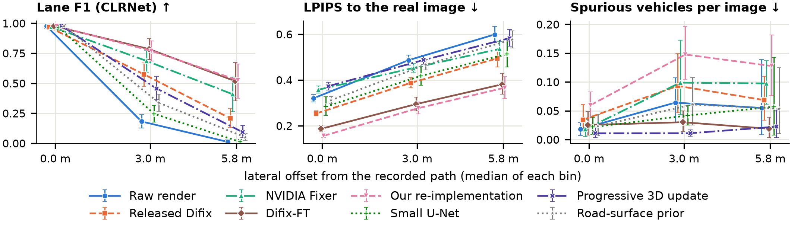
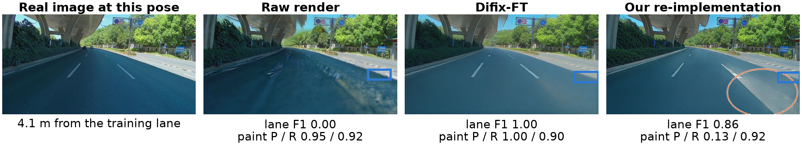

CS 566 Project Mid-Term Report · Kyle Sha · Allen Xia · 29 Oct 2026
The core study is complete, with the proposed vehicle-agreement score replaced (Section 4), and every extension and stretch goal has a first result. We reconstruct Gaussian splats [1] (with gsplat [2]) of eight held-out Para-Lane [3] roads from one lane each, render them at the recorded poses of the neighboring lanes, and compare the renders with the real images captured there. Fixers are generative models that repair a rendered image; the ones we train or fine-tune use pairs from five other roads (Section 4), with checkpoints selected on a sixth. We compare eight methods on all roads:
Each output is compared with the real image:
Offsets fall into three bins: on the path (below 1 m), ~3 m (1–4.5 m) and ~6 m (above 4.5 m). Intervals are 95% bootstrap intervals over lane-pair sequences (34 at ~3 m, 18 at ~6 m) or, where marked "over roads", over the eight roads' paired differences from the raw render.
| Tier | Item | Status |
|---|---|---|
| Core | Splats, raw render, released fixers, evaluation; Difix training re-implementation | Complete (8 roads; re-implementation validated on the DL3DV sample) |
| Extensions | Small U-Net, road-surface prior, progressive update, more roads | Complete (8 roads) |
| Extensions | Heading | Partial (2 of 8 roads) |
| Stretch | Camera height | Partial (warp on 2 roads; MV2 pairs also offset laterally) |
| Stretch | Cross-dataset (EUVS [11] on MARS [12]; MV2 [13]) | Partial (EUVS rotation-only setting not run) |
| Stretch | FaithFusion [14] | Partial (map on 2 roads; map-weighted update on 1) |
| Stretch | Closed loop in HUGSIM [15] | Partial (one driving policy, LTF [16]) |
| Added | Our own splat renderer | Complete |
Trust falls quickly off the recorded path. On the path every method agrees with the real image (lane F1 0.96–0.98). For the raw render, lane F1 falls to 0.18 [0.13, 0.24] one lane over (median 3.0 m) and to 0.01 two lanes over (median 5.8 m); the best fixers reach 0.79 and 0.53 (Figure 1, Table 1). Related work sees similar drops: KITScenes [17] reports a 79–86% fall in traffic-sign recall at ±3 m, and RGE-GS [18] reports 16.1 dB PSNR for plain 3DGS about 3.5 m off the path on Para-Lane (our raw render: 18.3 dB at 3.0 m).

Figure 1. Lane agreement, perceptual distance and spurious vehicles against lateral offset, pooled over eight held-out roads.
| Method | Lane F1, ~3 m | Lane F1, ~6 m | LPIPS, ~3 m | Paint P / R, ~3 m | Spurious vehicles / image, ~3 m |
|---|---|---|---|---|---|
| Raw render | 0.18 [0.13, 0.24] | 0.01 | 0.49 | 0.50 / 0.52 | 0.064 |
| Released Difix | 0.57 [0.47, 0.67] | 0.21 | 0.39 | 0.53 / 0.58 | 0.093 |
| NVIDIA Fixer | 0.69 [0.59, 0.78] | 0.41 | 0.45 | 0.62 / 0.58 | 0.099 |
| Difix-FT | 0.79 [0.70, 0.87] | 0.52 | 0.29 | 0.63 / 0.63 | 0.030 |
| Our re-implementation | 0.77 [0.68, 0.85] | 0.53 | 0.28 | 0.57 / 0.60 | 0.148 |
| Small U-Net (from scratch) | 0.25 [0.18, 0.32] | 0.01 | 0.42 | 0.57 / 0.38 | 0.042 |
| Progressive 3D update | 0.46 [0.36, 0.56] | 0.09 | 0.49 | 0.66 / 0.49 | 0.011 |
| Road-surface prior | 0.34 [0.27, 0.41] | 0.05 | 0.47 | 0.57 / 0.56 | 0.061 |
Table 1. Pooled results over eight roads (2,825 images at ~3 m, 1,386 at ~6 m).
Fixers trained on our pairs restore the most lane geometry. Paired on the same frames at ~3 m, Difix-FT exceeds NVIDIA Fixer, the strongest released fixer, by +0.10 [+0.07, +0.13] lane F1, on all eight roads; our re-implementation exceeds it by +0.08 [+0.04, +0.13], on seven, and beats released Difix-ref on each of the four roads where both ran. The progressive update gains +0.33 [+0.19, +0.49] over roads at ~3 m but little at ~6 m, the road-surface prior gains less but on every road, and the small U-Net gains little. Results vary strongly by road: the best fixer reaches lane F1 0.95 on a curved road but at most 0.39 under an elevated highway. Traffic does not drive these results: on the 75% of frames with no moving object in the lower half of the real image, the ranking at ~3 m is unchanged and lane F1 rises by at most 0.05.
Fixers also add content that is not there. Our re-implementation adds spurious vehicles on all eight roads (+0.089 per image, [+0.062, +0.117] over roads), Difix-FT does not on average (−0.028 [−0.066, +0.001]), and the progressive update has the fewest. The raw render's own rate (0.064) compares with 0.018 on the path, where traffic matches, so it comes mostly from the render rather than detector noise. On average every method has a higher paint precision than the raw render, but one lane over it falls by at least 0.5 on 1.2% of frames for our re-implementation and 1.9% for the progressive update (at most 0.3% for the others). Figure 2 shows such a frame: our re-implementation paints a marking that is absent from the real road (paint precision 0.13 versus 0.95 for the raw render) while its lane F1 is 0.86; released Difix-ref invents the same marking (not shown), and Difix-FT does not.

Figure 2. A frame one lane over (4.1 m), chosen by a fixed rule on scenes 16 and 17: the largest invented marking among the frames where released Difix or our re-implementation lost the most paint precision. Orange: invented paint; blue: erased paint.
Further results are summarized in Table 2.
| Study | Finding |
|---|---|
| Difix training re-implementation, from SD-Turbo [19] on the DL3DV [20] sample | Beats the official trainer in a matched single-view setting (LPIPS 0.218 versus 0.237; FID [21] 26.1 versus 36.3); with a reference view, within 0.005 LPIPS of released Difix-ref |
| Heading, up to ±15° (2 roads) | Raw-render lane F1 only falls from 0.98 to 0.94, against the real image warped by the same rotation |
| Camera height, ±1 m (2 roads) | Road-region PSNR falls by 4.9–7.2 dB and lane F1 to 0.49 (+1 m) and 0.02 (−1 m); fixers recover at most 0.10 |
| Other datasets (EUVS/MARS, MV2) | Para-Lane-trained fixers transfer only partly: on MV2 they gain less LPIPS than released Difix-ref (0.05–0.14 versus 0.10–0.16) |
| Closed loop (HUGSIM, LTF policy, 25 scenarios) | No fixer improves the driving score (0.408 without a fixer; paired −0.051 to −0.005 for three fixers; an earlier U-Net −0.21); the policy spends 73% of its steps more than 1 m off the recorded path |
| FaithFusion (2 roads) | Its information-gain map predicts wrongly changed pixels less well than the splat's missing coverage (AUROC 0.53–0.67 versus 0.64–0.77) |
| Our own renderer | Matches gsplat to 90.8 dB PSNR; a full refit is within 0.07 dB of gsplat fits and takes 1.44 times as long |
Table 2. Further results (raw render unless a method is named).
The research question, data and main comparison are unchanged, and the extensions and stretch goals scheduled for 10/30–11/20 already have first results.
We plan to complete the partial items by 11/20:
| Dates | Remaining tasks |
|---|---|
| 10/30–11/20 | Heading and camera height on all eight roads; released Difix-ref on the other four roads; the information-gain map and map-weighted update on all eight roads; our re-implementation and a second driving policy in the closed loop (UniAD or VAD, if their older CUDA stack can be built); EUVS's rotation-only setting if nuPlan access is granted. Mark invented content in the videos; prepare the code for release. |
| 11/21–12/10 | Final figures and per-road analysis; presentation (12/1–12/10); project webpage with downloadable code (12/10) |